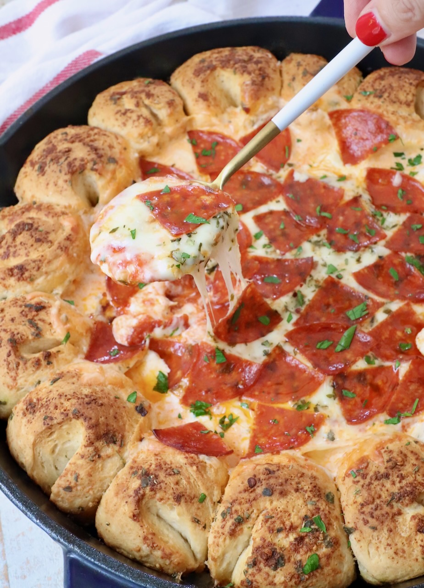
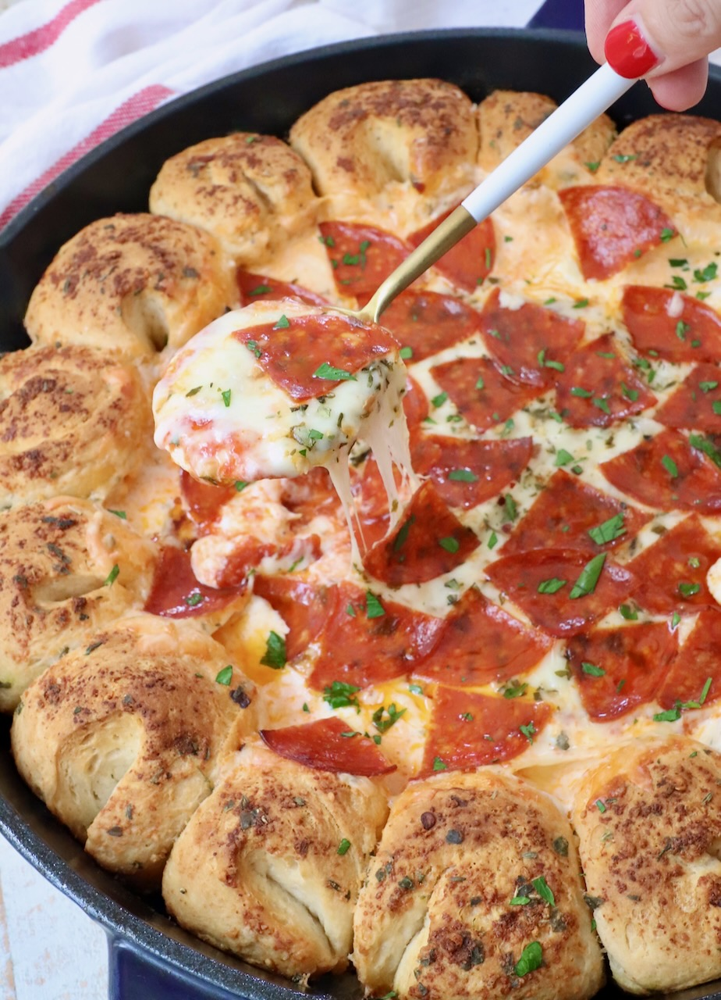

Ingredients
- FOR THE PULL-APART BREAD
16.3 ounce can Grands biscuit dough, 8 count
¼ cup melted butter
2 teaspoons parmesan cheese, grated
1 teaspoon Italian seasoning, click link for the recipe
- FOR THE PIZZA DIP
8 ounces cream cheese, softened
1 cup ricotta cheese
3 teaspoons Italian seasoning, divided
1 cup marinara sauce, or pizza sauce
1 ½ cups mozzarella cheese, grated
8 slices pepperoni, quartered (optional topping)
Instructions
- Preheat the oven to 350°F.
- Cut each biscuit in half, then roll each half of dough into a ball.
- Combine the melted butter, parmesan cheese, and 1 teaspoon Italian seasoning in a bowl.
- Roll each of the balls of biscuit dough in the seasoned butter, then arrange them around the edge of a greased large cast iron skillet.
- In a large bowl, use an electric mixer, or stand mixer, to combine the cream cheese, ricotta cheese and 2 teaspoons Italian seasoning.
- Spread the cream cheese mixture in the bottom of the skillet in the middle of the balls of dough.
- Top with the marinara sauce, shredded mozzarella cheese and remaining 1 teaspoon Italian seasoning. Top with pepperonis, or another pizza topping of your choice.
- Place in the oven and bake for 25-30 minutes.


 
